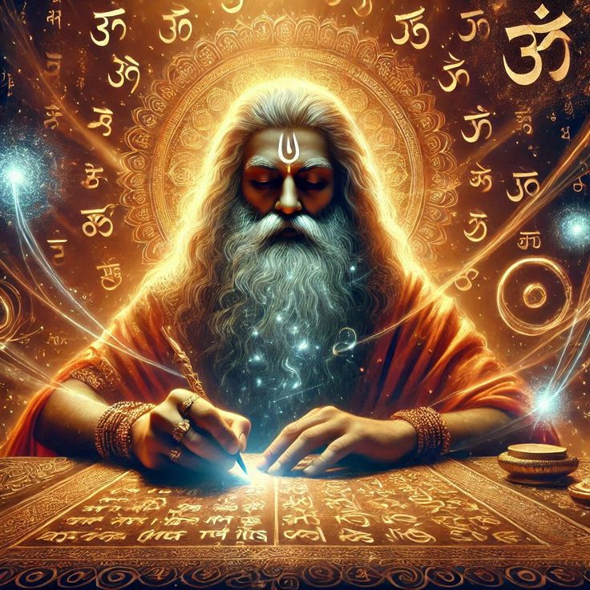

Overview
The Ramayana, written by Sage Valmiki, is one of the most revered Hindu epics. It narrates the life of Lord Rama, an incarnation of Lord Vishnu, and his ideals of duty, honor, and devotion.
Main Characters
- Rama: The prince of Ayodhya and the embodiment of dharma.
- Sita: His devoted wife, symbolizing purity and loyalty.
- Lakshmana: Rama’s loyal brother and protector.
- Hanuman: Devotee of Rama and a mighty warrior of unmatched devotion.
- Ravana: The ten-headed demon king of Lanka who abducts Sita.
Lessons We Learn
- Duty & Sacrifice: Rama’s obedience to exile shows that righteousness may require personal sacrifice.
- Loyalty & Devotion: Sita and Lakshmana stand by Rama, demonstrating unwavering support.
- Courage & Teamwork: Hanuman and the vanaras unite to build the bridge—faith combined with action achieves the impossible.
- Triumph of Dharma: Rama’s victory over Ravana proves that justice, virtue, and truth prevail.
- Restoration & Renewal: Rama’s return ignites hope and celebrations (Diwali)—showing that perseverance brings fulfillment.